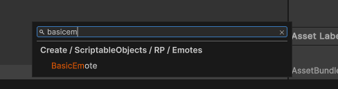
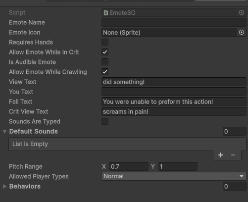
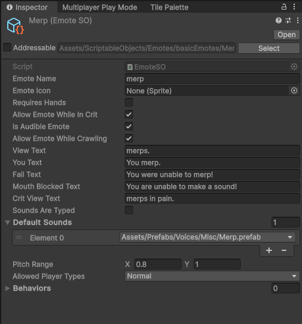
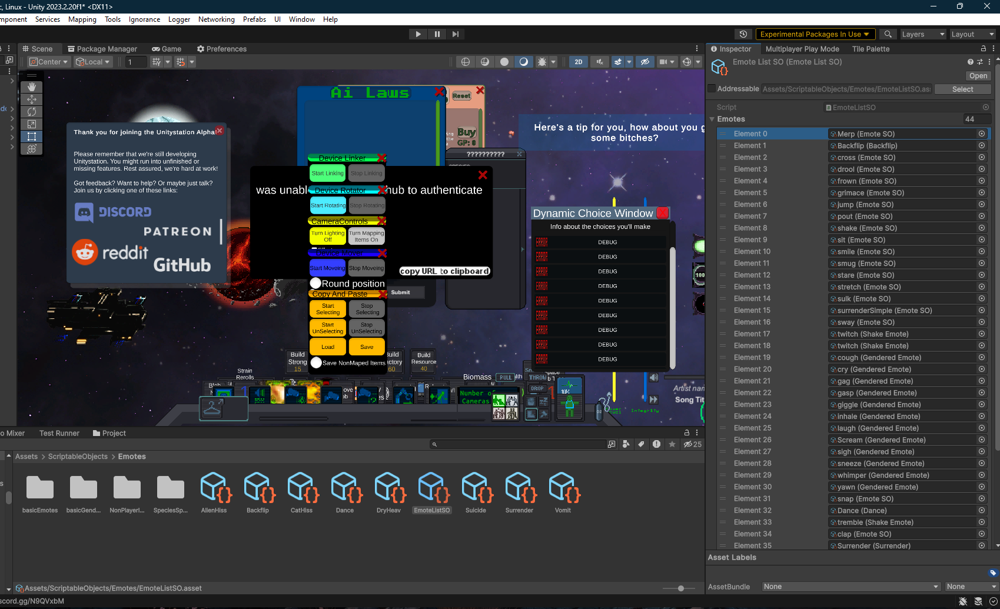
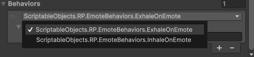
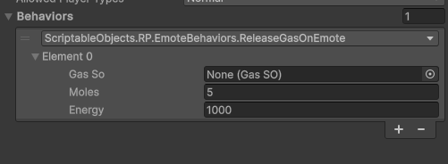

EmoteSO, and how to work with it.¶
Emotes add some mechanical depth into Unitystation's roleplaying aspects, not only do they describe actions that characters take; but they also can automate redundant behaviors for both players and developers.
Emotes can be triggered by developers manually via code, or by players using the /me or * prefixes in chat, or by pressing \ on your keyboard to access the quick emotes menu.
Creating your first Emote¶
There are three base emotes to choose from to create your emotes.
- EmoteSO (Basic)
- Gendered EmoteSO (Emote Sounds based on character identity)
- Species Specific Emote (Emotes that only trigger for specific species)
To make things simple for ourselves, we'll start of by making a basic emote that will play a sound clip when triggered, and display flavour text.
Emotes can be easily created by right clicking on the asset browser inside Unity, then searching for the type of Emote you'd like to create.

After you've chosen the basic emote option, you'll be prompted to name your EmoteSO; we'll be naming it "Merp" for now.
Note: Always create and place your scriptable objects in their correct folder. Check the Assets/ScriptableObjects/Emotes folder for examples on how to properly store SOs based on their types.
After you've successfully created your emote, you will be able to see this in the inspector:

Let's go through what each property does.
-
Emote Name: This property can be treated as the ID of the Emote, and is what the
EmoteActionManagerto find and trigger emotes in various different scenarios. Mirror does not allow EmoteSOs to be networked in functions or syncvars, so we use the Emote Name to request emotes to be triggered over the network. -
Emote Icon: Used inside menus like the quick emote menu [ \ ].
-
Requires Hands: If this emote requires hands, it will automatically fail if the creature's hands are found to be bound by handcuffs or similar items. It will also fail if the create has no hands at all.
-
Allow Emote While In Crit: If the player reaches a critical condition (is dying), and this property is marked as false; The emote will automatically fail. However, if left enabled, it will trigger the Crit View Text instead.
-
Is Audible Emote: Does this Emote emit sounds? If yes, any sounds inside
Default Soundswill be played at random. -
View Text: This is the text that is displayed for others. Note that the view text will always start with your character's name before anything inputted inside this property.
-
You Text: This is the text that is only viewable for your character when this emote is triggered. If left empty, the character will see the view text that others receive.
-
Fail Text: Triggers when one of the emote's requirements are not met. For example, having bound hands while Requires Hands is active. Can only be seen by the character that is attempting to trigger this emote.
-
Crit View Text: Special text for when the character is in critical condition, and
Allow Emote While In Critis active. -
Sounds Are Typed: Property that enables Emotes to check for the character's species, gender and pronouns. Does NOT work on the default EmoteSO, requires
GenderedEmoteorSpeciesSpecificEmote. Sounds must be defined manually for each species and gender/body type, default sounds are automatically ignored, even if no sounds are defined for a specific species/body type. -
Pitch Range: The random pitch range used for audio to add some variety on how emotes sound, the lower the X value is; the deeper the sound will become and vice versa with the Y.
-
Allowed Player Types: Disallows special players from executing emotes when they're not supposed to. (Like Ghosts, AI, etc).
-
Behaviors: Used to add extra functionality to emotes when successfully triggering.
For our merp emote, we're going to simply fill in some basic text and a sound to play when we trigger the emote.

And we're done.
If you're triggering the emote from the server, and do not want to this emote to be viewable by other players. You can just simply cache a reference to this emote in one of your components and trigger it by doing EmoteActionManager.DoEmote(cachedEmote, targetPlayer).
However, in most cases, you will need to either allow clients to call these emotes, or you will need a way to quickly call an emote from the EmoteActionManager without having a direct access to it.
We use EmoteListSO to keep track of all non-hidden emotes in the project, which can also be used by players to trigger emotes manually.
To add your emote, simply find EmoteListSO under Assets/ScriptableObjects/Emotes, and add your new emote in there.

Once it's in the list, you can now trigger the emote via code manually by going EmoteActionManager.DoEmote("merp", targetPlayer).
You can now go in-game and test this emote. This covers all the basics for creating Emotes for unitystation.
Advanced Behaviors for Emotes¶
Emotes do not just play sounds and display text, they can also have extended behaviors associated with them that can help add extra mechanical flavour to roleplaying for players; while allowing developers to make their functionalities more re-usable.
Emotes use a design pattern that containerizes all behaviors into their own classes that inherit from the IEmoteBehavior interface. This interface is automatically detected inside Unity under the behaviors sections in emotes, so you don't need to worry about writing anything extra or worry about any manual steps to add these behaviors onto emotes. You only have to focus on writing your behaviors then you can easily add them later with a simple click.

To demonstrate how easy it is to create behaviors for emotes, We'll be creating a simple behavior for a Fart emote that releases gasses under the player when they trigger it.
First, create a new script inside Assets/Scripts/ScriptableObjects/RP/EmoteBehaviors. We'll call this script "ReleaseGasOnEmote".
Inside this new script/class, we'll extend it using the IEmoteBehavior interface.
namespace ScriptableObjects.RP.EmoteBehaviors
{
public class ReleaseGasOnEmote : IEmoteBehavior
{
public GasSO GasSo;
public float moles = 5;
public float energy = 1000;
public void Behave(GameObject actor)
{
GasMix.GetEnvironmentalGasMixForObject(actor.GetUniversalObjectPhysics()).AddGas(GasSo, moles, energy);
}
}
}
Once you're done, save and recompile the project; then the behavior can be added into any emote you want:

It's that simple. You can adjust the values to your liking, and someone later on can reuse this same behavior for something like a burp emote that releases a different gas.
For a more advanced/complex look into how emotes are utilized, check out how emotes are used for vomit and gasping interactions.
Note: Never inherit from EmoteSO, always extend it via IEmoteBehavior.